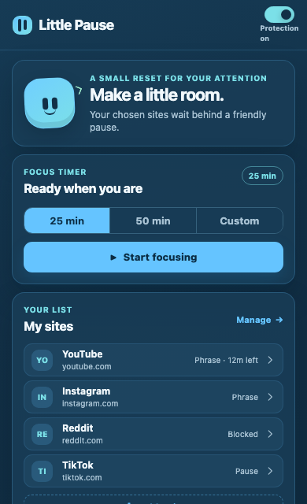
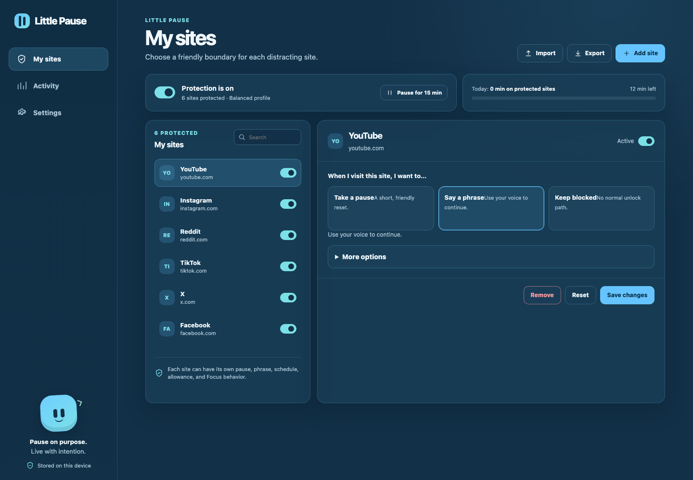
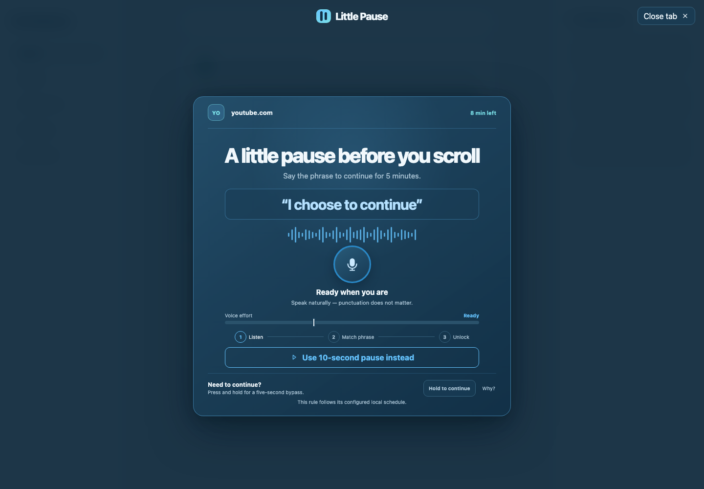

Gentle by design
Start with a small pause instead of a lecture. Adjust the boundary site by site.
Little Pause 3.1.0
A friendly website blocker and focus timer for everyday attention. Choose the sites that pull you away, then decide what happens next.
Free, local-first, and currently installed through Chrome Developer mode.
Make space for your attention.

How it works
Pick the websites that make it harder to stay with what matters.
Start with ten quiet seconds, a phrase, or a firm block.
When the pause ends, make the choice that feels right for now.
Made for real days
Little Pause keeps the everyday flow light while leaving room for schedules, limits, voice checks, and Focus sessions when you want them.
Start with a small pause instead of a lecture. Adjust the boundary site by site.
Settings and activity stay in browser storage. There are no accounts or tracking scripts.
Start a 25-, 50-, or custom-minute session from the popup and let it run in the background.
Advanced schedules, allowances, cooldowns, and emergency access live in the full settings page.
Preview, not a block
This browser demonstration is only a preview. It does not block this page, request access, or save anything. The extension uses the same small pause before a site you choose.
See how to installLittle Pause preview
This is a preview — nothing is blocked.
A tiny moment for your attention.
See it in action
These are screenshots from the extension build, not product mockups.


Questions, answered
Not yet. The current release is available as a manual download. The installation page explains Chrome Developer mode and Load unpacked.
No. It only evaluates the domains you add to My sites, including subdomains when that option is enabled.
No audio or recognized transcript is stored. Browser speech processing and microphone availability depend on Chrome and your device. See the privacy page.
Yes. Every site can use a timed pause or a hard block. Voice is optional and only appears for Voice rules.